AMENIP CORPORATION
The Company Hidden Inside Other People's Arcade Machines
Amenip Corporation’s games reached operators through U.S. Billiards, Centuri, Taito, Nova Games, Roller Tron, Techstar, Game Plan and ESG. Titles and company credits changed between regions and commercial versions. Later preservation databases often compressed those relationships into a single developer or manufacturer entry, obscuring the different contributions behind the machine.
Those different identities record the roles of software authors, rights holders, manufacturers and commercial partners. What can be reconstructed today is a small but international arcade catalog of five Amenip-associated game families, documented between 1981 and at least early October 1982. The company itself remains elusive: its legal formation, officers, business address, and legal endpoint have not yet been established with sufficient evidence. Yet its software, copyrights, trade relationships, physical machines, program credits, service documents, and preservation history are strong enough to recover a surprisingly detailed story.
The five documented game families are:
- Mariner / 800 Fathoms
- Round-Up / Fitter / T.T. Fitter
- Naughty Mouse / Snatcher
- Woodpecker
- Macho Mouse
The five-game count follows distinct game families. Regional titles, cabinet names, licenses and preserved ROM sets remain part of each game’s history, but do not automatically represent additional works. Counting those names separately, or merging technically distinct games, explains much of the variation among later catalogs.
1. The company that survives in other people's machines
Amenip is most often documented through software and partner records rather than a distinctive line of its own cabinets. Its name appears in program credits, copyrights and service documentation for machines bearing other brands. Regional distributors and manufacturers could give a game a new title or cabinet while the software retained a different company’s identity.
A simple title, year and manufacturer listing cannot fully express those arrangements. Each game’s history therefore distinguishes the parties named in its program, promotional material and service documents.
Mariner says Amenip in the software, yet 800 Fathoms was sold as a U.S. Billiards machine in North America. Round-Up carries Amenip/Centuri in the program, while contemporary trade evidence says Centuri's licensor was Hiraoka & Co. Taito publicly showed Fitter in Japan. A surviving Snatcher cabinet places NOVA under the marquee title while the game running inside it shows a PALCOM QUEEN RIVER program credit. Woodpecker was commercially presented in Japan by Roller Tron while a contemporary show photograph still displayed Amenip on the screen. Macho Mouse provides one of the clearest legal clues: Amenip is identified in the copyright trail as the work-for-hire author and claimant, while Techstar marketed the arcade product and Game Plan supplied formal cabinet and service documentation.
These records describe different responsibilities: authorship, copyright ownership, licensing, manufacturing, marketing, regional presentation and cabinet support. Preservation attributions add a later interpretation of those records. The company named on one artifact need not have performed all of the work behind the game.
The result is a company history built less from a corporate brochure than from a network of artifacts. Title screens establish what the software itself said. Contemporary flyers establish how a product was sold. Trade magazines establish who announced a license or showed a machine. Manuals reveal which company expected to service the cabinet. Corporate records tell us whether two apparently related companies could really have been the same legal entity. Preservation source code shows which programs are close relatives and which are materially distinct.
Amenip’s corporate records remain elusive, but its games document a broad network of commercial relationships.
The range of Amenip’s games
The five games also differ substantially in their play, sound, controls and physical presentation. Those features are part of the history alongside the records identifying who created, sold and supported them.
They also were not five copies of the same idea. The catalog moves from an underwater scrolling shooter to a maze-and-pattern puzzle, then into odd vertical climbing games, and finally back to a mouse-themed maze game sold into the conversion market. Preservation source places the games across several familiar early-1980s hardware families rather than one obvious proprietary Amenip platform: Mariner/800 Fathoms sits in the Scramble-family preservation tree; Naughty Mouse and Woodpecker live in Pac-Man-derived territory; Round-Up/Fitter and Macho Mouse survive in the same broader driver family. [4][5][23]
That variety is one reason a cabinet-only history misses the company. Amenip does not leave behind one unmistakable machine architecture or a line of cabinets wearing a house style. Its fingerprint is more often the program credit and the chain of commercial partners around it.
Gameplay descriptions connect the company relationships with the machines players encountered. When later descriptive databases disagree with current program or driver evidence, the technical evidence is given priority and the disagreement is stated rather than quietly harmonized.
2. Five games and their regional versions
The catalog contains five distinct game families. Regional titles, cabinet names, preserved ROM sets and companies presenting the same game do not automatically add separate works.
That rule collapses obvious regional families. Mariner and 800 Fathoms belong to one underlying output. Round-Up, Fitter, and T.T. Fitter belong to one underlying program family. Naughty Mouse and Snatcher belong to one underlying output even though the cabinet and program evidence carries different commercial names and credits.
The harder question was Woodpecker. For a time, the similarity of Naughty Mouse and Woodpecker made it tempting to treat Woodpecker as simply another renamed or slightly modified member of the Naughty Mouse family. Preservation history made that temptation stronger because the two games traveled through some of the same MAME source territory and shared Amenip/Queen River/Palcom-related attribution problems.
The technical evidence ultimately argued against merging them. Current MAME preserves Naughty Mouse and Woodpecker as separate parent games rather than making one a clone of the other. The control definitions differ in a way that matters to play: Naughty Mouse is joystick-only, while Woodpecker adds an action button. Woodpecker's program/storage arrangement is also materially different, and the preserved source documents ROM material dumped from a large epoxy block or security module. [4] Woodpecker’s Amenip attribution is supported by evidence specific to that game, rather than solely by its relationship to Naughty Mouse. Earlier Woodpecker-specific development evidence exists, and the Japanese Roller Tron evidence independently ties a commercially shown Woodpecker machine to an Amenip-bearing screen. These independent records support the attribution. The distinction keeps the catalog focused on distinct works rather than the convenience of a database tree. On the evidence currently available, Naughty Mouse and Woodpecker are close relatives, but they are not the same Amenip output. Commercial records and technical evidence together support the five-game total.
3. Mariner / 800 Fathoms: one game crossing three markets


Mariner is one of the best places to begin because Amenip is not hidden there. The surviving Mariner program displays © AMENIP CORP 1981. That is direct evidence from the game itself, and it provides a firm 1981 anchor for Amenip's arcade activity. The North American 800 Fathoms variant preserves the Amenip identity while adding U.S. Billiards. The relationship is visible in the software before any later database is consulted. [20] This is also an early example of why the physical machine and the software should not be treated as the same historical object.
What a player actually saw in Mariner
The corporate trail starts with a game that is visually easy to understand. Mariner is an underwater scrolling shooter. The player pilots a submarine through submerged terrain, firing forward torpedoes while using a second attack against targets below. Later descriptive references consistently describe five stages and an enemy submarine encounter at the end of each area. Current preservation information also records an eight-way joystick and two action buttons for the 800 Fathoms lineage. [21]
The result is a useful contrast with the paperwork-heavy history surrounding it. On screen, the premise is immediate: squeeze a submarine through dangerous terrain and keep shooting. Off screen, the same program becomes Mariner in one market, 800 Fathoms in another, an ESG cabinet or conversion offering in West Germany, and a U.S. Billiards complete machine in North America.
That makes the game itself a good demonstration of the difference between a work and a commercial product. The submarine program can remain substantially the same while the title, cabinet, regional seller, and support network change around it.
U.S. Billiards takes the game to North America
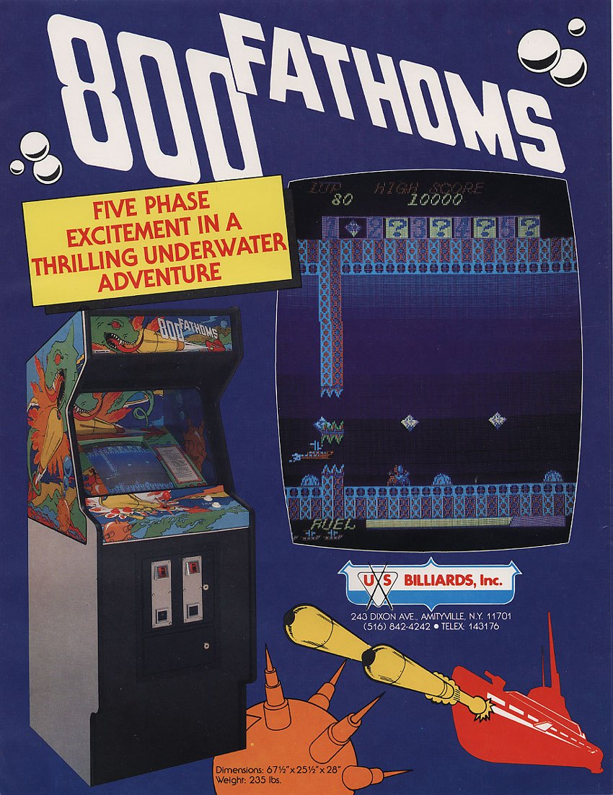


An original U.S. Billiards flyer presents 800 Fathoms as a complete commercial arcade machine. It is not merely a board being mentioned in a parts list or a title retrospectively associated with a company. The flyer gives U.S. Billiards a direct public-facing role in selling the North American product. [17]
Surviving U.S. Billiards technical documentation strengthens that conclusion. The service material supports real cabinet, shipping, installation, board, and repair integration. In other words, U.S. Billiards belongs in the 800 Fathoms story because it handled a physical commercial machine, not because a modern database happened to place its name in a manufacturer column.
The exact Amenip-U.S. Billiards contract has not been recovered. That absence is worth stating because it prevents the evidence from being overread. We can say that U.S. Billiards manufactured and marketed the North American machine and that the program retained Amenip. We cannot yet reproduce the precise legal language by which the rights moved between them.
The ROMs support one underlying family
Preservation evidence helps answer a different question: are Mariner and 800 Fathoms fundamentally separate games, or regional variants of one work?
Current MAME preserves Mariner as the parent and two 800 Fathoms sets as close Mariner-lineage variants. The ROM definitions show limited program differences while substantial graphics and PROM material is shared. Current metadata describes the 800 Fathoms relationship as Amenip under U.S. Billiards licensing. [5]
MAME cannot by itself prove the legal contract, but it is very useful for the technical relationship. Here the software structure agrees with the commercial evidence: one underlying game traveled through different regional packaging.
ESG and the West German branch

“Mariner — game description. In five gripping stages, the player, as a submarine commander, fights a mysterious maritime empire. Its command center must be found and destroyed. Destroying the base begins the next stage. Attackers must be held at bay with torpedoes and depth charges; destroying the underwater power’s supply depots earns additional points. Adjustable bonus-point thresholds award extra submarines. With another credit, play can resume where it ended within 20 seconds. Available as an upright, table or wall-mounted machine. Also available as a conversion kit for Scramble machines.”

“Electronic game machines of the new generation, in all-polyester construction. Wall-mounted video game in a functional design.” The advertised features include impact resistance; two programmable coin validators for different currencies; interchangeable controls for future games; protection against tampering; interchangeable mounting frames for circuit boards; an integrated, theft-resistant cashbox; and a tilted monitor for a sense of depth.
ESG’s Mariner advertisement documents the game in West Germany in multiple cabinet forms and as a conversion for Scramble-style hardware. The separate wall-cabinet flyer illustrates ESG’s modular system, but the displayed page does not itself name Mariner. [18] [19]
This evidence establishes that Mariner was commercially packaged and marketed in West Germany. It does not establish the precise rights chain from Amenip to ESG. No recovered contract tells us whether ESG licensed directly from Amenip, obtained rights through another intermediary, or worked through a more complicated distribution arrangement.
The surviving material identifies Amenip through the software copyright, U.S. Billiards through North American machine manufacture and marketing, and ESG through West German packaging and sales. The contracts connecting them have not been recovered.
The Allumer development claim
One modern preservation-era proposal attributed development of Mariner/800 Fathoms to Allumer. It was investigated rather than dismissed out of hand. The problem was not that the proposal was impossible; the problem was that the accessible evidence did not provide sufficiently strong Mariner-specific primary support to override the direct 1981 Amenip program credit.
That distinction matters. A later development attribution can sometimes be correct even when another company owns the copyright or publishes the game. But when the proposed developer cannot be tied to the title with evidence stronger than the game's own contemporary credit, the attribution remains a hypothesis.
For Amenip's history, Mariner therefore remains one of the strongest direct pieces of evidence that the company was producing or controlling arcade software in 1981.
It also shows how far the work traveled: Amenip in the program, U.S. Billiards in the North American machine, ESG in West Germany, and a preservation lineage that still makes their relationship visible decades later.
4. Round-Up / Fitter: four companies around one program
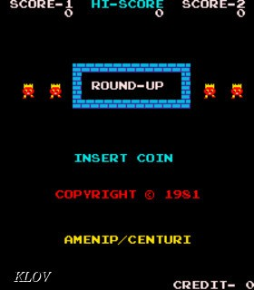

Round-Up and Fitter are an even better demonstration of how quickly arcade credits can become misleading. The North American Round-Up program carries the line COPYRIGHT © 1981 AMENIP/CENTURI. That is direct software evidence that Amenip was involved in the North American program lineage. [20]
If that were the only surviving evidence, it would be easy to write the story as “Amenip and Centuri made Round-Up.” Contemporary trade material complicates that sentence immediately.
What Round-Up/Fitter asks the player to do
Round-Up is not simply another Pac-Man-style maze chase. Its central loop mixes pursuit, collection, and a color-pattern puzzle. Descriptive sources portray the player as a small robot moving through a maze, capturing red characters and using them to convert the nine white circles in the center area to red while hostile chasers interfere. Finishing that center objective produces a separate pattern-matching challenge: the player manipulates a tri-colored 3-by-3 or 4-by-4 arrangement to match a sample, under a 90-second limit. [22]
Current MAME source maps the Round-Up/Fitter family to an eight-way joystick and one action button. [23] That detail is worth preserving because some older database summaries reduce the game to a generic maze title. It was stranger than that - part chase game, part territory-management exercise, part visual puzzle.
That eccentric design also helps explain why the rights trail is more interesting than a simple regional name swap. A distinctive program could be moved through Hiraoka, Centuri, and Taito while retaining different screen credits and commercial identities. The game a player learned was coherent even when the company names around it were not.
Centuri's licensor was Hiraoka
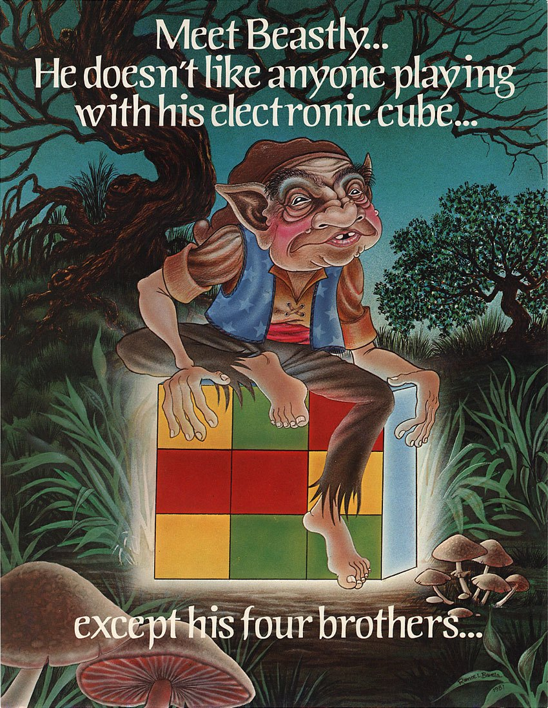
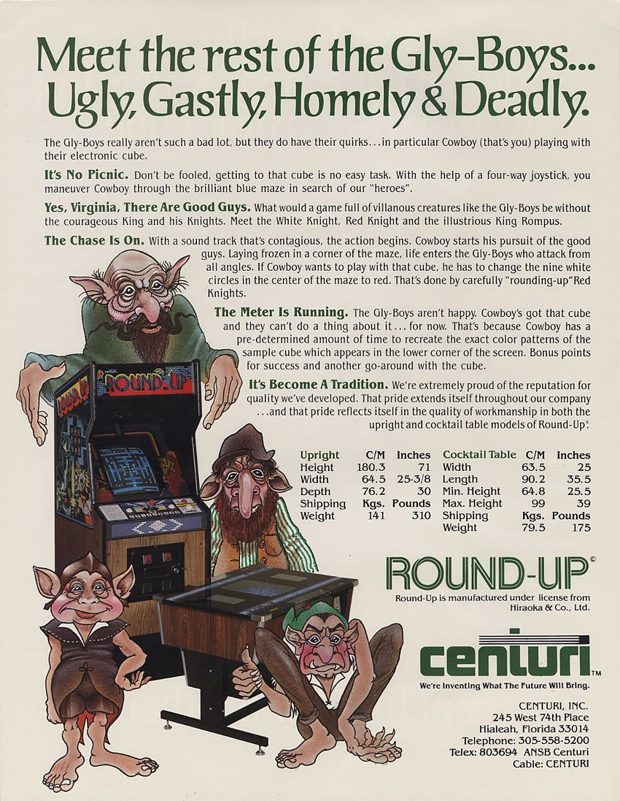
Cash Box reported in December 1981 that Centuri had a licensing agreement with Hiraoka & Co., Ltd. for Round-Up. The report described American-region manufacturing rights rather than an undefined association. [2]
Centuri's own original flyer independently supports the same relationship. It states that Round-Up was manufactured under license from Hiraoka & Co., Ltd., while advertising the game in upright and cocktail forms. [3]
Those two sources are important because they correct a very easy mistake. The Amenip/Centuri copyright line does not justify saying that Centuri licensed Round-Up directly from Amenip. The period commercial paper trail says Hiraoka was Centuri's licensor. The exact Amenip–Hiraoka agreement has not been found. Amenip may have created the software for Hiraoka, assigned or shared rights, or participated through another arrangement. The program credit and Centuri’s documented license identify the participants but do not establish the original direction of development or rights transfer.
Fitter in Japan


Japan supplies another layer. Game Machine's coverage of the 19th Amusement Machine Show, held October 6-8, 1981, documents Taito publicly presenting Fitter. Surviving Fitter presentation carries © TAITO CORP. 1981. [1][20] That is strong evidence for Taito's Japanese commercial presentation. It is not, by itself, proof that Taito was the original developer of the underlying program. The Japanese Taito copyright and the North American Amenip/Centuri credit may reflect different regional or commercial rights. Hiraoka’s role as licensor adds a further distinction; none of those records alone identifies every company’s contribution.
The documented roles
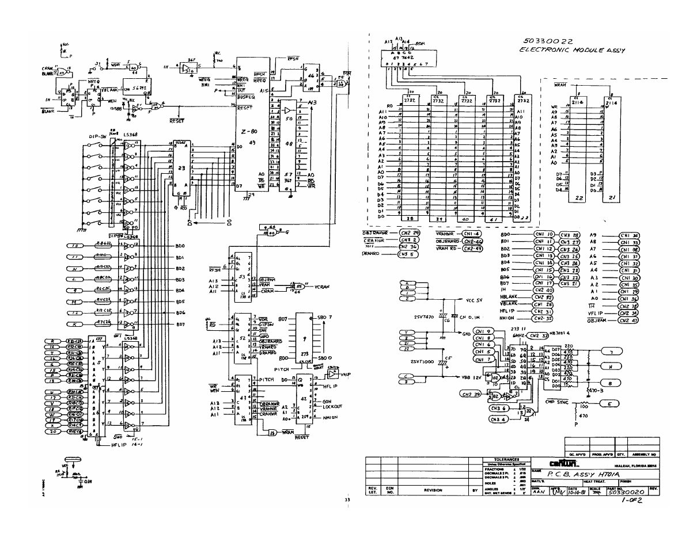
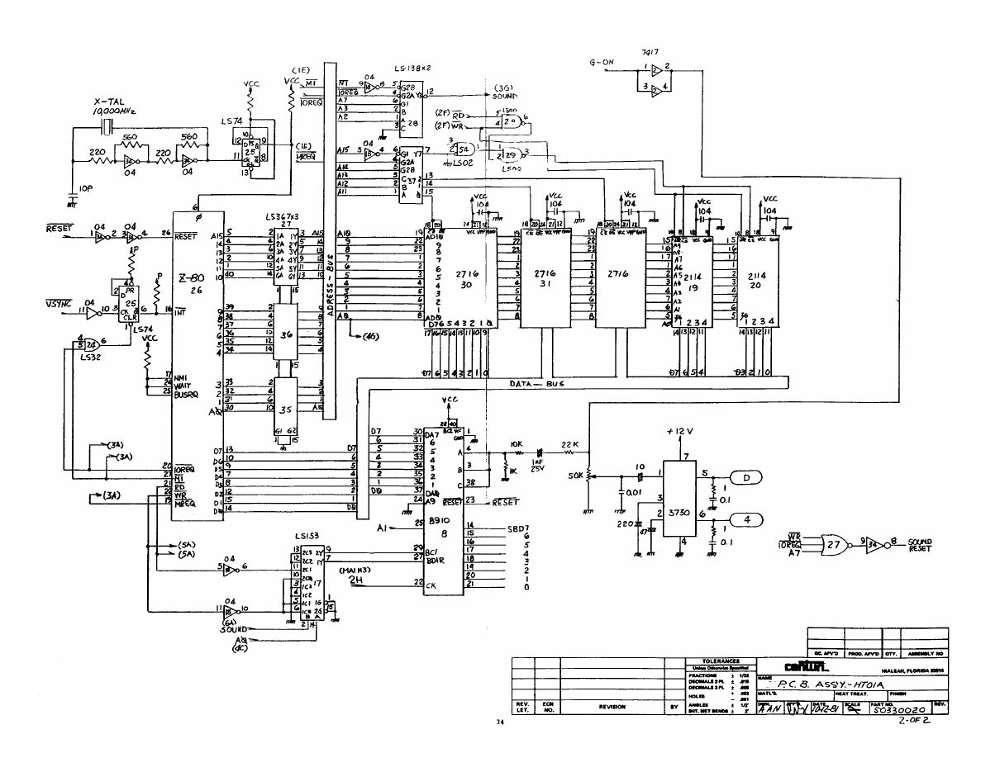
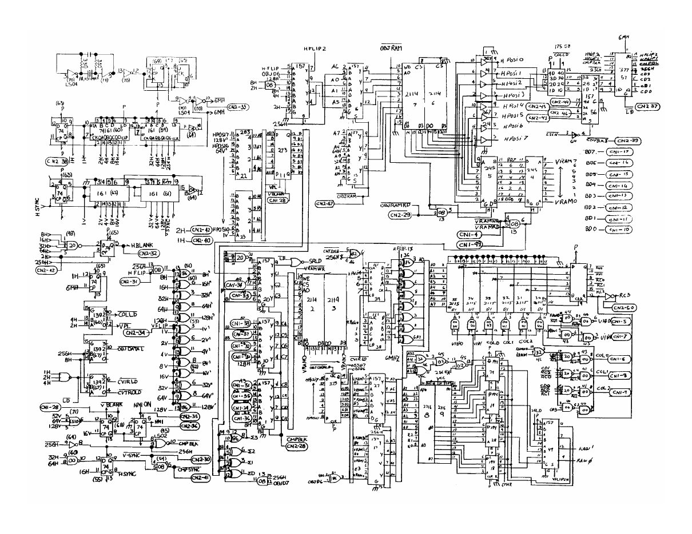
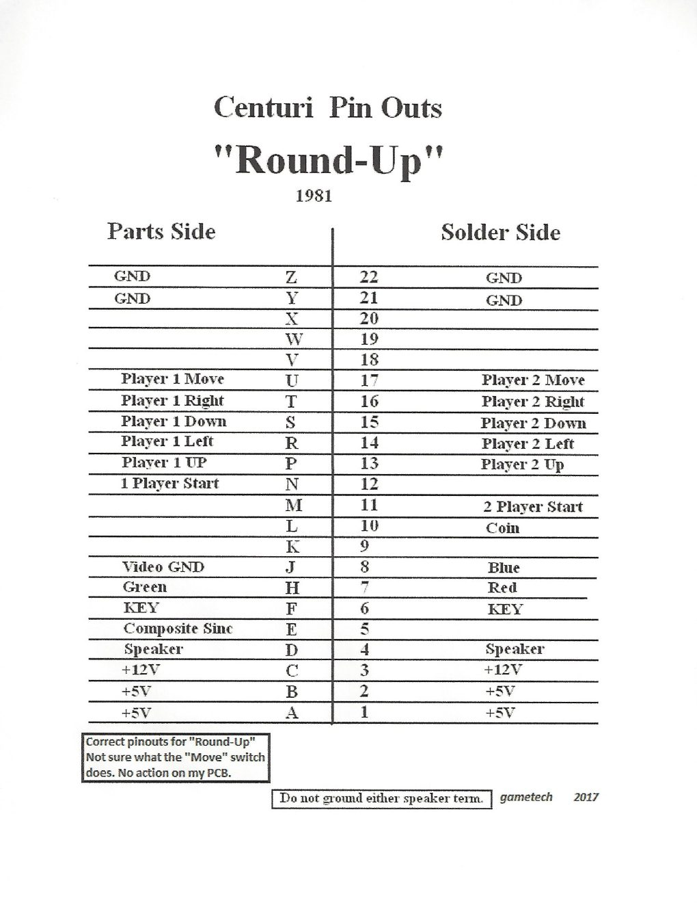
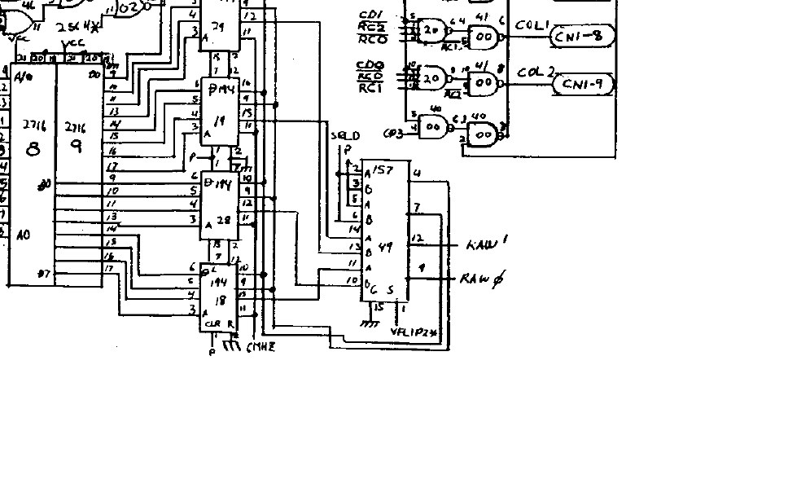
The documented roles are:
- Amenip: genuine underlying program/copyright relationship in the North American Round-Up lineage.
- Hiraoka & Co., Ltd.: documented licensor to Centuri.
- Centuri: North American manufacturer and commercializer under that Hiraoka license.
- Taito: documented Japanese presenter of Fitter.
What remains unknown is the exact Amenip-Hiraoka contract and, with it, the original direction of development and rights transfer.
Round-Up/Fitter remains one game family with several documented commercial participants. Its software credits, license and regional presentations establish different roles for Amenip, Hiraoka, Centuri and Taito, while the original development agreement remains unknown.
5. Naughty Mouse / Snatcher: the cabinet that changed the story


Of all the Amenip families, Naughty Mouse produced the most persistent corporate question because it is where Nova Games enters most visibly. Current MAME preserves two principal Naughty Mouse sets within one underlying family. One is identified in preservation metadata as Amenip (Palcom Queen River); another as Amenip Nova Games Ltd. [4] Those labels were useful clues, but they were not enough on their own to establish corporate history. Emulator metadata can preserve valuable knowledge, yet a parenthetical manufacturer note is not a contract, incorporation record, or period advertisement. The origin of those qualifiers requires evidence separate from the metadata itself.
Naughty Mouse’s controls and its relationship to Woodpecker
Naughty Mouse is usually described as a vertical climbing/platform game built around a mouse trying to work upward through a screen of ladders and hostile birds. Eggs and woodpeckers are central to the surviving descriptions, and the basic playfield is immediately different from the maze structure of Round-Up or Macho Mouse. [24] Later descriptions sometimes blend Naughty Mouse with Woodpecker, particularly when describing the controls. Many derivative descriptions say that Naughty Mouse has a jump button and then describe Woodpecker as essentially the same game with altered colors or stage arrangements. Current MAME's input definitions do not support the first part of that conventional description. The nmouse input map assigns only a four-way joystick; there is no action-button input. The separate woodpek map explicitly adds Button 1. [4]
That discrepancy is historically useful. It suggests that at least some modern prose descriptions have blended the two related games together. Current MAME's own driver commentary is cautious about the original title as well, noting that the word NAUGHTY is visible at the top of the playfield and that the exact original name was not known to the driver author. [4] The surviving evidence supports a deliberately narrower description than the usual database text: Naughty Mouse/Naughty is a mouse-and-woodpecker climbing game controlled in the current preservation driver by a four-way joystick. Claims about a jump button are not repeated as fact because the current input map contradicts them. The absence of a mapped action button is one of the technical differences supporting their treatment as separate games.
What the surviving programs say
Earlier examination of the preserved Naughty Mouse variants found visible Amenip credit in the software, which means the Nova/Palcom/Queen River qualifiers were not simply transcriptions of a single title-screen line. That was important. It showed that the preservation labels contained historical interpretation beyond what could be read directly from the common screen evidence. This led into the older MAME provenance trail. Dave Widel is associated with the early MAME contribution history for Naughty Mouse. Historical source lineage shows the Palcom Queen River qualifier appearing relatively early in the preservation history around Naughty Mouse and Woodpecker. The exact original source behind that qualifier, however, was not recovered.
MAME’s development history and its official releases provide different kinds of evidence. A work-in-progress entry establishes that code or information was being developed, but does not prove that the same attribution appeared in a particular public release. The original MAME 0.69 source package has not been verified for the specific attribution discussed here; later or derivative trees cannot establish its exact contents. The version history matters when dating an attribution, but emulator wording alone cannot establish the corporate identity behind “Palcom Queen River.” The surviving Snatcher cabinet adds physical evidence to the software record.
Snatcher, Nova, and PALCOM QUEEN RIVER in one physical machine
International Arcade Museum photographs contributed by Eric Bonenfant show a surviving cabinet with SNATCHER on the marquee and NOVA printed directly beneath the title. The same photographed machine is running a program whose screen visibly reads © PALCOM QUEEN RIVER. [9] The photographed machine brings the Nova cabinet branding and PALCOM QUEEN RIVER software credit together in one surviving configuration. NOVA is printed beneath the Snatcher title on the cabinet, giving it a visible commercial role beyond the attribution recorded in MAME. The running program displays the full PALCOM QUEEN RIVER wording, independently confirming that the phrase was used in the software. The cabinet therefore proves a real commercial/presentation relationship among the Snatcher/Naughty Mouse family, Nova branding, and a PALCOM QUEEN RIVER program variant.
It still does not answer every question. We do not know whether Palcom and Queen River were separate companies, one company, a label and a company, a rights holder and a development group, or something else. We do not know the contract linking them to Nova. We do not know the precise legal mechanism connecting Nova and Amenip. The photographed machine cannot tell us whether its current board and cabinet remained together from the moment of original sale, although the physical combination is unquestionably important evidence of a surviving configuration. The photographed machine supports the following observations: Nova had a direct cabinet/presentation role in at least one surviving Snatcher configuration, and a surviving program variant carries a full PALCOM QUEEN RIVER credit. These markings establish a surviving cabinet and program combination; they do not establish common ownership among the credited companies.
Why Snatcher does not become a sixth Amenip game
Despite the different cabinet title, Snatcher is counted with Naughty Mouse rather than as a separate underlying Amenip output. The preservation lineage treats it as part of the same game family, and nothing recovered in the available evidence justifies promoting the cabinet title into a distinct program on the level of Woodpecker. This is exactly why the output count has to be based on underlying program identity rather than marquee names. In the early arcade business, a new title on the cabinet could represent a regional rename, a licensing presentation, a revised program, or an entirely new game. The evidence has to decide which one. For Naughty Mouse/Snatcher, the evidence supports one Amenip output with multiple commercial identities.
6. Woodpecker: credits, hardware and Japanese release


Woodpecker presents several related attribution questions involving its resemblance to Naughty Mouse, differing program credits, an unusual security module and Roller Tron’s Japanese commercial presentation. Its resemblance to Naughty Mouse is complicated by different program credits and controls, MAME’s account of an epoxy security module, and contemporary Japanese coverage of Roller Tron’s release. Palcom and Queen River appear in the software and preservation record, but their corporate identities remain unresolved. The distinctions emerge from the combined software, hardware and trade evidence.
How Woodpecker differs from Naughty Mouse
Woodpecker clearly belongs to the same broad design neighborhood as Naughty Mouse: a vertically organized playfield, a small character navigating platforms or ladders, and bird imagery that makes the family resemblance obvious. The dangerous shortcut is to stop there.
The current preservation driver gives Woodpecker a four-way joystick plus an action button, while Naughty Mouse has no mapped action button. [4] Specialist historical commentary has likewise noted that Woodpecker allows the player to go on the offensive in a way Naughty does not. [24] The preserved input definitions establish a difference in controls; a full gameplay comparison would require direct observation of both programs.
That difference sits beside the separate parent-game treatment, the epoxy-module program arrangement, the different surviving credits, and Woodpecker's independent Roller Tron commercial history. Put together, those details make Woodpecker look less like a palette swap and more like a related game that received additional program and commercial development.
An arcade catalog also cannot be counted by screenshots alone. Two games can share enough visual DNA to look nearly interchangeable in a still image while differing in controls, program storage, release history, and rights presentation. In Amenip's case those deeper layers are exactly what preserve Woodpecker as output number four rather than another Naughty Mouse alias.
The Q RIVER program credit
One surviving Woodpecker variant displays Q RIVER. Another displays © AMENIP. [4] That finding eliminated one possible simplification immediately. Queen River was not merely invented by a modern emulator database. The name exists in surviving program data. At the same time, the full corporate meaning of Queen River remained uncertain. A program credit proves the credit. It does not automatically tell us whether Queen River was the developer, copyright owner, publisher, licensee, or a label used by another organization.
The Palcom part was even more elusive. Japanese searches produced apparent hits that initially looked promising, but at least some of them were OCR confusion involving BALCOM, not Palcom. Those false positives were rejected. No contemporary legal or trade document recovered in the Amenip work independently established Palcom's identity or role. That is why the phrase “Palcom Queen River,” although familiar from preservation databases, cannot be treated as one proven legal company name. Later, the Snatcher cabinet's full © PALCOM QUEEN RIVER screen upgraded the evidence that the combined wording really existed in a surviving program context. Even so, the legal identity behind it remains unresolved.
Roller Tron’s Japanese release
The crucial Woodpecker breakthrough came from contemporary Japanese trade coverage. Game Machine No. 199, dated November 1, 1982, covered the 20th Amusement Machine Show and labeled a photographed game screen Woodpecker (Roller Tron). The screen visible in that contemporary show photograph carries © AMENIP. [6] That detail matters enormously. It corrects the idea that the Roller Tron version necessarily carried a Roller Tron copyright screen. The machine shown by Roller Tron still displayed Amenip.
Game Machine No. 202, dated December 1, 1982, went further. It identified Woodpecker as a Roller Tron product and reported an early October 1982 release. The article identified Shinichi Mori as Roller Tron's president. [7]
A separate Game Machine legal/company notice from July 15, 1982 independently anchors Roller Tron and Shinichi Mori before the game's autumn commercial appearance. [8]
Together, those sources provide a strong Japanese chronology: Roller Tron existed as an identifiable company in mid-1982, showed Woodpecker at the autumn amusement show, and was reported as releasing it in early October. The show machine itself retained Amenip on the screen.
The early October 1982 release is the latest confirmed commercial appearance of an Amenip-credited arcade game in the available record. It establishes that the credit was still being used, rather than an exact date when Amenip Corporation ceased operating.
The epoxy module and the surviving board
Woodpecker's hardware adds another layer of preservation evidence. Current MAME documents program ROM material dumped from a large epoxy-filled module or security block. A surviving physical board photograph at the International Arcade Museum shows the characteristic large module and handwritten WOOD PECKER identification. [4][10]
No visible Roller Tron or Palcom company marking was established from that board photograph. The module is important for two reasons. First, it gives Woodpecker a materially different program/storage treatment from Naughty Mouse, strengthening the case that the games should not be collapsed into one output. Second, it reminds us how vulnerable obscure arcade software can be. When code is buried inside a potted module and company paperwork disappears, modern understanding may depend on a combination of physical boards, dumps, source comments, and contemporary photographs.
Which surviving dump was the Roller Tron game?
The contemporary show photo strongly favors the Amenip-credit lineage for the Japanese Roller Tron release because the machine on display visibly shows Amenip. What we do not have is a verified byte-for-byte chain linking that photographed machine to one specific surviving ROM dump.
Identifying the exact ROM set would require original board provenance, dump notes, ROM labels or a verified comparison.
The distinction is subtle but important. It is reasonable to say that Roller Tron's documented Japanese presentation used an Amenip-bearing Woodpecker screen. It is not reasonable to say, without provenance, that a particular modern set is definitely the exact board photographed at the show.
Why Woodpecker counts as a separate game
The separation from Naughty Mouse rests on several independent points:
- MAME preserves each as a separate parent game.
- Naughty Mouse is joystick-only; Woodpecker adds an action button.
- Woodpecker uses a materially different program/storage arrangement involving the epoxy module.
- Woodpecker has its own Japanese commercial chronology through Roller Tron.
- The earlier hypothesis that its Amenip attribution was merely inherited from Naughty Mouse was withdrawn after chronology and source review.
That is enough to make Woodpecker one of Amenip's five distinct underlying outputs. Its software credits, trade coverage, hardware and preservation history together document a company that left few surviving corporate records. Those sources support the game’s inclusion while leaving the precise relationships among several credited companies unresolved.
7. Macho Mouse: Amenip, Techstar, and Game Plan


Macho Mouse is the opposite of Woodpecker in one important respect. Where Woodpecker's company roles had to be inferred from a maze of program variants and Japanese trade evidence, Macho Mouse gives Amenip an unusually clear legal position. The U.S. copyright record identifies Amenip Corporation as both the work-for-hire author and copyright claimant for Macho Mouse.[11] That is unusually valuable evidence for an obscure arcade game. It means Amenip's role is not merely a name attached by a modern database. The copyright record places the company at the source of the work. Techstar’s surviving material documents the marketing and conversion-product side of the release.
What Macho Mouse actually plays like
Macho Mouse returns to a maze, with a mouse marking territory while avoiding enemies. Later descriptions refer to a jump or enemy-neutralizing action, but the January 15, 1983 Soo Valley advertisement gives a more specific contemporary account: the player places explosive balloons and triggers them with the button, facing cats and snakes. It also describes an inter-round slot-machine sequence. The differing descriptions should not be treated as interchangeable accounts of the control mechanic.[25]
Current MAME places Macho Mouse on the suprmous machine/input configuration in the same source driver that contains Round-Up/Fitter, and that shared input definition uses an eight-way joystick with one button. [23] This provides useful technical context, but it does not support a claim that Amenip simply recycled Round-Up code. A shared preservation/hardware family is not automatically a documented development genealogy.
For the reader, the more interesting point is that Amenip's last clearly documented work does not look like a company repeating one genre. Across five outputs, the catalog ranges from shooter to puzzle-maze to vertical platform/climbing designs and back to a mouse-themed maze game. That variety fits the picture of a small software/right-bearing operation working through other companies rather than a manufacturer selling one standardized cabinet platform.
Techstar packages the arcade product
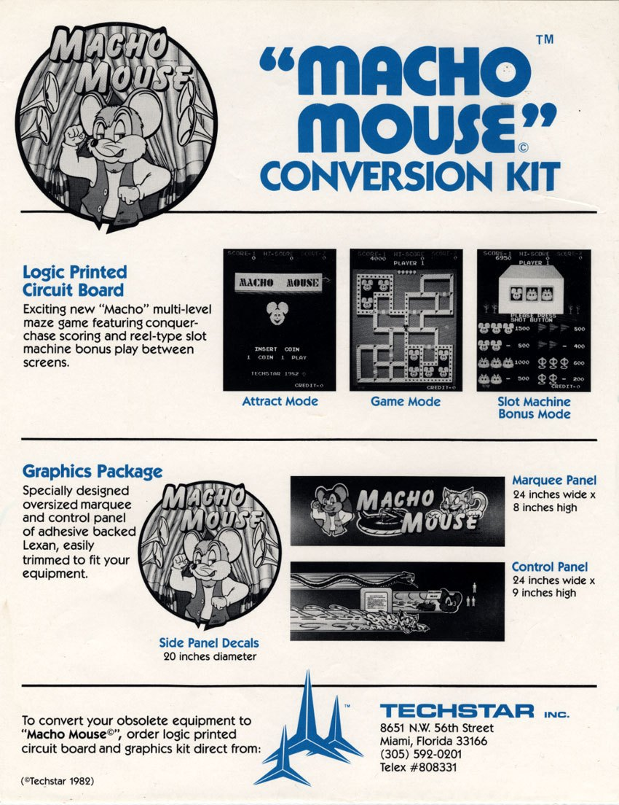
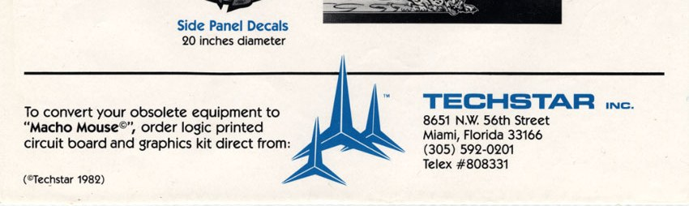
Techstar marketed Macho Mouse for the arcade trade and promoted it as a conversion product. Its surviving flyer presents the game as a colorful early-1980s maze title centered on a cartoon mouse. More important historically, the material places Macho Mouse within the conversion-kit economy: a game could be sold to operators without requiring an entirely new purpose-built cabinet.
That business model mattered to smaller arcade firms. A conversion package could reuse existing cabinets while replacing the board, art, controls, wiring, or other components needed to create a new attraction. It reduced the capital burden compared with manufacturing and shipping every game as a complete dedicated machine.
Techstar's trademark trail provides a firm commercial date. The company filed for MACHO MOUSE on August 23, 1982 and claimed first use and first use in commerce on August 18, 1982, for electronic video amusement apparatus. [12]
The trademark does not turn Techstar into the game's author. Instead, it neatly complements the copyright evidence: Amenip is documented at the work/authorship level; Techstar is documented at the branding and commercial-product level.
Game Plan enters through service documentation
A complete 15-page Game Plan manual survives for Macho Mouse. It covers installation, operation, servicing, operator adjustments, monitor information, wiring, and related cabinet support. A wiring drawing identified as 02-70154A is dated May 7, 1983. [11] That is far stronger evidence than a collector memory or a later database association. Game Plan produced formal documentation intended to keep real machines operating.
What the manual does not prove is ownership of the entire game. It does not show that Game Plan acquired the copyright from Amenip. It does not prove that every Macho Mouse cabinet was built by Game Plan. It establishes a real physical-cabinet and service-support role. This distinction is the same one that runs through the Amenip catalog: a service manual can prove that a company supported a product without proving that it wrote the software.
More than one cabinet form
A January 1983 Soo Valley distributor advertisement offered Macho Mouse in three physical formats: a full-size upright, a mini-upright, and a sit-down table. The ad is useful because it shows the game being sold as more than a hypothetical board or unreleased prototype. Multiple cabinet forms were being offered to operators. [11]
The ad cannot give us a production total. It cannot prove that all three cabinet forms came from one manufacturer. It cannot tell us how many operators bought them. But it demonstrates a real commercial afterlife extending into 1983.
That afterlife is important for Amenip's timeline because it must not be misused. Macho Mouse could still be sold, serviced, and supported in 1983 even if Amenip itself was no longer visibly active in the arcade trade. A later Game Plan wiring drawing or distributor ad proves continued life for an Amenip-created game. It does not automatically prove continued corporate activity by Amenip.
For that reason, the latest confirmed Amenip-bearing commercial point remains Woodpecker in early October 1982 rather than being pushed into 1983 by downstream Macho Mouse support.
Production and distribution remain uncertain
The surviving program, Techstar promotional material, trademark record, distributor advertisement and Game Plan manual establish Macho Mouse as a commercial product offered in multiple cabinet forms. What does not survive is a reliable production total, a dependable serial-number range, or the exact Amenip-Techstar-Game Plan contract. The safest reconstruction is therefore also the most informative: Amenip created and claimed the work. Techstar packaged and marketed the arcade product. Game Plan supplied documented cabinet/service support. Distributors offered complete machines in multiple forms. The exact scale of the release remains unknown. Those distinct contributions explain the different company names associated with the game.
8. Nova Games: commercial connections and separate corporate records
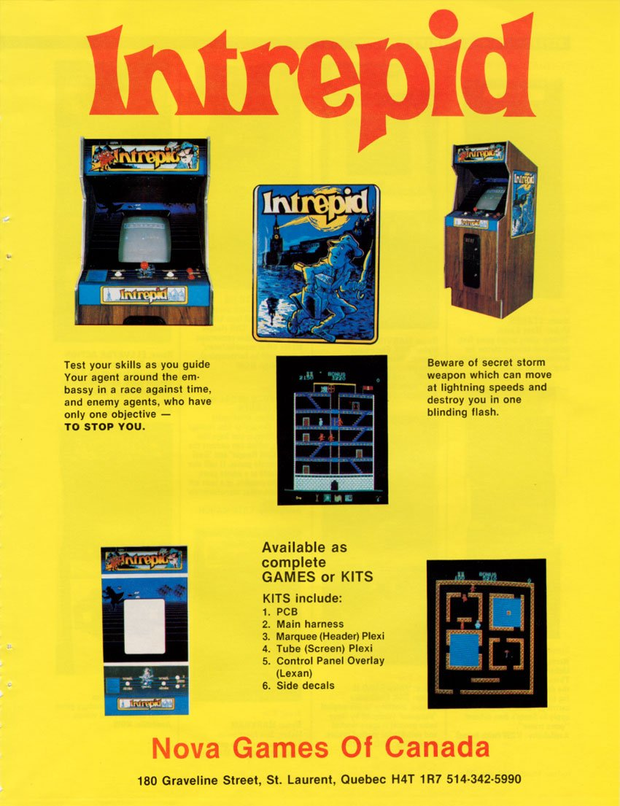
Nova appears in preservation descriptions of Amenip games and on the surviving Snatcher marquee. Its presence has encouraged suggestions that Amenip became Nova in 1982, but the companies’ documented timelines overlap. Canadian corporate filings show that Nova was already incorporated in March 1981.
Nova already existed in 1981
Six original federal records from Corporations Canada document Nova’s early company history. They establish that Les Jeux Nova Ltée / Nova Games Ltd. was incorporated on March 13, 1981. Founding directors included Neil Rubin and Courtney Lai-Hing. Andrée Bertrand appears in formation/incorporator material and signed the initial director filing as president. [14]
On September 14, 1982, Ed Prest became a director while Rubin and Lai-Hing remained. A registered-office filing shows the office moving from 3150 Sartelon to 190 Graveline on that date. [15][16]
That last address matters because some older or secondary records use 180 Graveline. The original September 1982 filing reviewed says 190 Graveline, so the original filing controls unless separate primary evidence establishes a later 180 address. A surviving annual return describes Nova's main business as “AMUSEMENT GAMES.” These records give Nova a real independent corporate life while Amenip credits were still appearing on arcade software.
That chronology alone defeats the simplest succession claim. Nova did not suddenly spring into existence after Amenip disappeared; it was already incorporated in March 1981. Amenip-bearing software remained commercially visible afterward, including the 1982 Woodpecker evidence.
What the records do not show
The Nova records reviewed so far do not provide a direct personnel or address bridge to Amenip. The available records concerning Rubin, Lai-Hing, Prest, or the known Nova addresses do not establish a direct link.
That negative result is useful but limited. It means the currently known Nova officers and addresses do not solve Amenip's corporate identity. It does not prove the companies were unrelated.
The game evidence says the opposite: there was clearly some relationship. Current MAME preserves an Amenip/Nova Naughty Mouse association. The Snatcher cabinet physically places NOVA under the title. Nova was an amusement-game company active during the same period. The connection is strong at the game and commercial-presentation level.
What remains unknown is the legal mechanism. Amenip could have been a developer supplying Nova. There could have been overlapping investors not visible in the recovered filings. Nova could have acted as a publisher or regional commercial partner. Amenip could have been a label or contracted development operation. Another agreement could have connected them without common ownership at all.
The surviving evidence does not choose among those possibilities. Three further Nova corporate records have not been examined. They could supplement the known chronology, but cannot be used to infer a relationship with Amenip.
The documented evidence includes:
- Nova was independently incorporated in Canada in March 1981.
- Its known directors and office history are documented in original federal records.
- It identified its business as amusement games.
- A surviving Snatcher cabinet provides direct Nova presentation evidence around an Amenip-associated game family.
- No current original corporate document proves a merger, rename, parent/subsidiary relationship, or common ownership with Amenip.
The commercial connection is well supported; a merger or legal succession remains unproved.
9. Palcom and Queen River: program credits and an unresolved identity
The Palcom/Queen River problem deserves its own treatment because the research changed the status of the evidence without resolving the company identity. At the beginning, Palcom Queen River looked suspiciously like a preservation-era phrase that might have been repeated so often that it acquired an illusion of certainty. The older MAME lineage used the qualifier around Naughty Mouse/Woodpecker, but the original documentary source behind it was unclear. Then the software supplied part of the answer. A Woodpecker variant visibly carried Q RIVER. That proved Queen River was not merely a modern database invention. The Snatcher cabinet later strengthened the point dramatically: the running game photographed in the Nova-branded cabinet visibly displayed © PALCOM QUEEN RIVER. The full wording therefore exists in surviving program evidence, not simply in emulator metadata. [9] That establishes the wording independently of later database attribution.
It still does not tell us what Palcom was. No recovered contemporary corporate filing, trade article, board legend, contract, or original dump note has yet explained whether Palcom and Queen River were one company, two companies, a brand and a company, or another arrangement. Searches that seemed to locate Palcom in Japanese material sometimes turned out to be OCR errors for BALCOM and were rejected. The software confirms that PALCOM QUEEN RIVER was an actual program credit, while the identity behind that wording remains unresolved. The surviving program evidence supports a clear distinction: Queen River and the combined PALCOM QUEEN RIVER credit are genuine surviving software evidence. Palcom's legal identity and the exact role of Queen River remain unresolved. A copyright line cannot, by itself, establish the company structure or the contracts behind a game.
10. Disputed company and game attributions
Several proposed identifications remain unsupported or conflict with the surviving record.
The 1985 New Jersey Amenip case
A published New Jersey appellate case, Amenip Corp. v. Ultimate Distribution Systems, Inc., initially looked tantalizing because it involved a company with the exact Amenip name and transactions dating to the same early-1980s period.
Reading the opinion changed the picture completely. The underlying business concerned cartons of disposable butane cigarette lighters stored in a warehouse. The published opinion does not identify arcade games, Nova, known Nova principals, or any other bridge to the Amenip documented in arcade software. [13]
The case cannot presently establish the arcade company’s timeline. This is an important negative finding because a careless company history could easily use the 1985 court date to extend Amenip's lifespan. The evidence does not justify that move. Unless the full underlying court file produces matching officers, addresses, or other entity-level evidence, the lighter-distribution plaintiff remains a separate unresolved namesake.
The unverified New York clue
A specialist secondary comment suggested that Amenip copyright material may point toward New York State. No located record supplies a direct underlying copyright application, correspondence file, corporate filing, or address record confirming that location with sufficient evidence.
New York therefore remains a clue, not a fact. This is precisely the type of statement that can harden into folklore if repeated without its evidentiary status. Until the source record is obtained, Amenip's verified jurisdiction and business address remain unknown.
The Allumer proposal
The modern Allumer development proposal for Mariner was investigated but did not provide primary evidence strong enough to displace the direct Amenip program credit. It remains a hypothesis worth remembering if stronger evidence appears, not a current attribution.
The BALCOM problem
Apparent Japanese “Palcom” hits included OCR mistakes involving BALCOM. Those hits were rejected rather than accumulated as supporting evidence. This matters because several weak false positives can create the appearance of confirmation when they all stem from the same recognition error.
Database counts of three or four games
Modern databases sometimes give Amenip fewer games than the five-output catalog. Those counts are not necessarily “wrong” within their own data models. They may omit Macho Mouse because Techstar is more visible commercially, merge Woodpecker into Naughty Mouse, or treat regional variants inconsistently. Counting distinct game families through software, authorship and commercial evidence gives five Amenip-associated games. Regional titles and cabinet brands do not add separate game families to that total.
The missing MAME 0.69 package
The original MAME 0.69 source package has not been verified for this attribution history. Later or derivative trees help explain the lineage, but cannot establish precisely what that official release contained.
This does not threaten the five-game catalog or the commercial history. It affects the narrower question of when particular parenthetical attributions entered MAME's public source lineage.
These gaps limit claims about Amenip’s location, lifespan and partners. The surviving evidence does not establish a New York base, continued arcade activity in 1985, a merger with Nova, a single Palcom/Queen River company, or Allumer’s development of Mariner.
11. Amenip’s documented activity and uncertain corporate dates
The strangest thing about Amenip is that its arcade timeline is clearer than its corporate biography. We can place the company in arcade software in 1981. Mariner carries Amenip directly. Round-Up carries Amenip/Centuri. Naughty Mouse preservation evidence keeps Amenip in the family. These are not late recollections; they are program-level or closely contemporary traces. We can still see Amenip in a commercial arcade context in 1982. Techstar's Macho Mouse commercialization begins in August, with Amenip documented in the copyright chain. Woodpecker's Japanese Roller Tron presentation reaches the autumn trade show, and the contemporary show machine still displays Amenip. Game Machine reports an early October release.
After that, the visible Amenip trail fades. Macho Mouse continues through Game Plan service material and distributor offerings in 1983, but that is the afterlife of an Amenip-created work. It does not prove Amenip's continued corporate operation. Nova continues its own corporate and amusement-game history, but Nova was already a separate legal corporation in 1981. Its later survival cannot simply be used as Amenip's endpoint. The 1985 New Jersey case cannot be joined to arcade Amenip on the current evidence.
The chronology therefore separates documented arcade activity from legal corporate life:
- First documented arcade activity: 1981.
- Last confirmed Amenip-bearing commercial arcade activity: at least early October 1982.
- Documented arcade activity span: 1981-1982.
- Legal formation date: unknown.
- Legal dissolution/end date: unknown.
The documented arcade dates establish the period in which Amenip’s work was commercially visible. Its legal formation and dissolution require separate corporate evidence.
What kind of company was Amenip?
Without a formation record or internal company literature, it would be reckless to give Amenip a precise organizational description such as manufacturer, publisher, or development studio and pretend the word covers every title. The surviving behavior suggests something more flexible. Amenip was clearly involved at the software and rights-bearing level. Its name appears in program copyrights. The Macho Mouse copyright trail identifies it as author and claimant. Its games repeatedly reached the market through outside manufacturers, marketers, regional presenters, or service partners.
That pattern makes “arcade software and rights-bearing operation” a safer functional description than “cabinet manufacturer.” It also fits the early-1980s coin-op business. Small firms did not need to own a large cabinet factory to matter. A company could create or control a program, license it to a regional manufacturer, allow another firm to package it as a conversion kit, and watch the game acquire different branding overseas. The physical machine an operator encountered might display the partner's name far more prominently than the company behind the software. Amenip appears to have lived in exactly that layer of the industry.
12. Game catalog and company roles
1. Mariner / 800 Fathoms — 1981
Amenip role: Underlying software/copyright identity.
Other documented roles: U.S. Billiards as North American machine manufacturer/marketer/service party; ESG as West German commercial packager/marketer.
Why it counts as one: Mariner and 800 Fathoms are close program variants within one preserved lineage.
Key evidence: Mariner © AMENIP CORP 1981; 800 Fathoms retains Amenip and adds U.S. Billiards; original U.S. Billiards flyer and technical documentation; MAME ROM relationship; ESG flyers. [5][17][18][19][20]
Still unknown: Exact Amenip-U.S. Billiards license language; exact ESG rights route; whether stronger evidence will ever support the modern Allumer development proposal.
2. Round-Up / Fitter / T.T. Fitter — 1981
Amenip role: Underlying program/copyright relationship in the North American Round-Up lineage.
Other documented roles: Hiraoka as Centuri's licensor; Centuri as North American manufacturer/commercializer; Taito as Japanese Fitter presenter.
Why it counts as one: The preserved programs and regional presentations represent one underlying game family rather than independent Amenip outputs.
Key evidence: Round-Up's Amenip/Centuri program credit; Cash Box report of the Centuri-Hiraoka license; Centuri flyer; Game Machine show coverage of Fitter. [1][2][3][20]
Still unknown: Exact Amenip-Hiraoka contract and original development/rights direction.
3. Naughty Mouse / Snatcher — 1981
Amenip role: Underlying game-family association supported by surviving software/preservation evidence.
Other documented roles: Nova as direct cabinet/presentation evidence; PALCOM QUEEN RIVER as direct program-screen evidence in the photographed Snatcher configuration.
Why it counts as one: Snatcher is a commercial/presentation identity within the Naughty Mouse family, not evidence of a separate Amenip program.
Key evidence: MAME's Amenip/Nova and Amenip/Palcom Queen River preservation branches; earlier visible Amenip program evidence; surviving SNATCHER/NOVA cabinet running a © PALCOM QUEEN RIVER program. [4][9]
Still unknown: Exact Amenip-Nova legal relationship; Palcom identity; Queen River's exact role; original source of early preservation parentheticals.
4. Woodpecker — 1982 commercial evidence
Amenip role: Distinct underlying Amenip-associated program/output.
Other documented roles: Roller Tron as Japanese commercial presenter/releaser; Queen River in a surviving program variant; Palcom unresolved.
Why it counts separately from Naughty Mouse: Separate MAME parent status, different controls, action button, materially different storage/program arrangement, epoxy-module preservation, and independent Roller Tron chronology.
Key evidence: Q RIVER and © AMENIP program variants; Game Machine show photo and release article; Roller Tron/Shinichi Mori legal notice; surviving PCB/module evidence. [4][6][7][8][10]
Still unknown: Exact identity of the Japanese show/release dump; legal identity of Palcom; precise Queen River relationship.
5. Macho Mouse — 1982
Amenip role: Documented work-for-hire author and copyright claimant.
Other documented roles: Techstar as commercial branding/marketing/conversion-product party; Game Plan as cabinet/service-support party.
Why it counts: The copyright evidence identifies Amenip at the level of the underlying work even though Techstar and Game Plan are more visible in surviving commercial material.
Key evidence: U.S. copyright data preserved in the Techstar copyright documentation; Techstar flyer and trademark record; Game Plan manual and 1983 wiring drawing; January 1983 distributor advertisement offering multiple cabinet forms. [11][12]
Still unknown: Exact Amenip-Techstar-Game Plan contract; production volume; serial-number range; distribution scale.
13. What the evidence says about Amenip and Nova
Because Nova appears so often around Amenip discussions, the evidence supports a clear distinction.
A real Amenip-Nova relationship is strongly supported at the game and commercial-presentation level.
The evidence includes:
- preservation of a Naughty Mouse set associated with Amenip and Nova Games;
- a surviving Snatcher cabinet with NOVA directly beneath the marquee title;
- Nova's verified independent existence as a Canadian amusement-game corporation during the same period;
- the broader pattern of Amenip games appearing through outside commercial partners.
What the evidence does not include is a document showing that Amenip changed its name to Nova, merged into Nova, owned Nova, was owned by Nova, shared officers with Nova, or used Nova as a formal corporate alias.
The overlapping chronology is particularly important. Nova's March 1981 incorporation predates the latest Amenip-bearing arcade evidence. A company cannot be explained as a simple 1982 rename of another company if the supposedly “new” corporation already existed the year before.
Amenip and Nova were connected around at least one game family, while the legal and operational structure of that relationship remains unknown. Their overlapping chronology and separate evidence of corporate existence make a simple succession account inadequate.
14. The small-company arcade economy Amenip reveals
Amenip's importance is not proportional to the number of games it made. Five game families form a small catalog beside the giants of 1981-1982. What makes the company useful to arcade history is how many different parts of the business those five games expose.
A player could stand at a U.S. Billiards cabinet without knowing that Amenip survived in the 800 Fathoms software. An American operator could buy Round-Up from Centuri while the period licensing announcement named Hiraoka and the program itself retained Amenip. A Japanese visitor could see Taito's Fitter at an amusement show. A Snatcher cabinet could put NOVA on the marquee while the running program said PALCOM QUEEN RIVER. Roller Tron could show Woodpecker while the screen still carried Amenip. Techstar could market Macho Mouse while Amenip remained the documented author and claimant and Game Plan later produced service material.
The different credits reflect a trade built around regional licenses, conversions, kit sales, imported programs, locally manufactured cabinets and title changes. Amenip’s limited public branding makes those arrangements especially visible: its work can often be identified in software sold or supported under another company’s name.
It also helps explain why preservation databases can disagree without any one of them being malicious or careless. A database built around cabinets may privilege the manufacturer. A ROM set may preserve the program copyright. A flyer may foreground the distributor or licensee. A service manual may carry the company expected to support the machine. A modern emulator has to fit a complex relationship into a compact manufacturer string. Each artifact answers a different question.
Comparing those records allows each company’s documented contribution to remain visible, including cases where the underlying agreement is missing.
For Amenip, the combined evidence supports five game families, documented arcade activity in 1981–1982, and multiple commercial partners. It leaves the company’s precise legal lifespan and its relationship with a supposed successor unresolved.
15. Amenip in the early-1980s arcade trade
Amenip's catalog is tiny by the standards of the golden-age arcade industry. Five underlying outputs over roughly two documented years will never compete numerically with Atari, Namco, Sega, Taito, or Midway.
Its small scale helps explain why so much of its record survives under other companies' names. Small developers and rights holders are often the first layer of arcade history to disappear. Their software survives because a larger manufacturer built the cabinet. Their copyright is obscured because a regional licensee put its own name on the title screen. Their business records vanish because nobody thought a two-year paper trail would matter forty-five years later. Preservation databases inherit fragments and, understandably, try to turn them into a usable catalog.
Amenip shows what can be recovered when those fragments are treated as evidence rather than trivia. Mariner reveals a program that moved from an Amenip credit into U.S. Billiards and West German commercial channels. Round-Up exposes a rights chain involving Amenip, Centuri, Hiraoka, and Taito without reducing any of them to a false single role. Naughty Mouse and Snatcher preserve a direct physical Nova connection and a genuine PALCOM QUEEN RIVER program credit while leaving the legal relationships open. Woodpecker ties Amenip to a Japanese Roller Tron release through contemporary show evidence and unusual surviving hardware. Macho Mouse gives Amenip a clear copyright authorship position even though Techstar and Game Plan dominate much of the surviving product trail.
Taken together, the games show a company operating in the connective tissue of the arcade business: software, rights, licenses, conversions, and regional partnerships.
The remaining gaps concern Amenip’s address and legal identity, its contract with Hiraoka, and the organizations behind Palcom and Queen River. The New Jersey cigarette-lighter lawsuit shares a company name but has no verified connection to the arcade business, so it cannot establish a later endpoint. The surviving record supports a detailed account of the games while leaving those corporate questions open. Amenip was an early-1980s arcade software and rights holder associated with five distinct game families and an international group of commercial partners. Its precise legal beginning and ending remain unknown. The program credits and partner records preserve work that is often obscured by the better-known names on the cabinets.
16. Open questions
The following questions remain open to new documents, surviving machines and firsthand evidence.
Amenip's legal formation, jurisdiction, officers, and address
A verified corporate filing, Copyright Office application, correspondence file, or authenticated company record could finally identify the legal entity behind the games.
Contribute evidenceAmenip's legal endpoint
The surviving evidence documents arcade activity through at least early October 1982. A dissolution, acquisition, tax, or later corporate record tied to the same entity could extend or clarify the legal timeline.
Contribute evidenceThe exact Amenip-Nova relationship
A contract, shared-officer record, shared-address document, correspondence, or period trade statement could turn the strong commercial relationship into a defined legal or operational one.
Contribute evidencePalcom and Queen River
The software credits are real and direct. What remains missing is the corporate identity and contractual chain behind them.
Contribute evidenceThe exact Japanese Roller Tron Woodpecker dump
Original board provenance or dump notes could connect the surviving program sets directly to the machine photographed in 1982.
Contribute evidenceThe Amenip-Hiraoka contract for Round-Up/Fitter
This would be the most valuable missing document for resolving the original development and licensing direction of that family.
Contribute evidenceAmenip-U.S. Billiards and ESG rights documents
These would refine the Mariner/800 Fathoms commercial chain without changing the current one-output count.
Contribute evidenceExact early MAME provenance
The original MAME 0.69 source package or contemporaneous dump notes could better date the entry of the Palcom/Queen River/Nova qualifiers into preservation history.
Contribute evidenceA verified document or well-documented surviving machine could resolve these questions or change the interpretation. Later repetition of an existing attribution does not independently strengthen it.
17. Game and company roles at a glance
| Underlying output | Amenip role | Other documented roles | Count |
|---|---|---|---|
| Mariner / 800 Fathoms | Underlying software/copyright identity | U.S. Billiards: North American complete-machine manufacture/marketing/service; ESG: West German commercial packaging/marketing | 1 |
| Round-Up / Fitter / T.T. Fitter | Underlying program/copyright relationship in North American Round-Up lineage | Hiraoka: Centuri licensor; Centuri: North American manufacturer/commercializer; Taito: Japanese Fitter presenter | 1 |
| Naughty Mouse / Snatcher | Amenip-associated underlying game family | Nova: direct cabinet/presentation evidence; PALCOM QUEEN RIVER: direct program-screen evidence in photographed cabinet | 1 |
| Woodpecker | Distinct Amenip-associated program/output | Roller Tron: Japanese 1982 release/presentation; Queen River: surviving variant evidence; Palcom unresolved | 1 |
| Macho Mouse | Work-for-hire author and copyright claimant | Techstar: branding/marketing/conversion product; Game Plan: cabinet/service support | 1 |
Total: 5 distinct Amenip-associated arcade game families.
18. Sources
1 — Game Machine, November 1, 1981. 19th Amusement Machine Show coverage documenting Taito's Fitter presentation.
Game Machine, 1981-11-01 (PDF)
2 — Cash Box, December 5, 1981. Contemporary report of Centuri's licensing agreement with Hiraoka & Co., Ltd. for Round-Up.
View source
3 — Centuri Round-Up flyer. Original commercial flyer stating manufacture under license from Hiraoka & Co., Ltd.; upright and cocktail presentation.
View source
4 — Current MAME pacman.cpp. Technical preservation source for Naughty Mouse and Woodpecker parentage, controls, ROM arrangements, epoxy-module notes, and preservation labels.
View source
5 — Current MAME scramble.cpp. Technical preservation source for Mariner/800 Fathoms parent/variant relationship and current license metadata.
View source
6 — Game Machine, November 1, 1982, No. 199. 20th Amusement Machine Show coverage showing “Woodpecker (Roller Tron)” with an Amenip-bearing game screen.
Game Machine, 1982-11-01 (PDF)
7 — Game Machine, December 1, 1982, No. 202. Roller Tron Woodpecker article reporting an early-October-1982 release and identifying Shinichi Mori.
Game Machine, 1982-12-01 (PDF)
8 — Game Machine, July 15, 1982. Roller Tron legal/company notice independently anchoring Shinichi Mori.
Game Machine, 1982-07-15 (PDF)
9 — International Arcade Museum / KLOV, Snatcher Naughty mouse. Surviving cabinet photographs contributed by Eric Bonenfant; SNATCHER/NOVA marquee and PALCOM QUEEN RIVER running-screen evidence.
View source
10 — International Arcade Museum / KLOV, Woodpecker. Surviving PCB photograph and epoxy-module evidence.
View source
11 — Macho Mouse copyright registration PAu000456896, October 5, 1982; Techstar sales flyer; Game Plan service manual and wiring drawing 02-70154A, May 7, 1983; and Soo Valley advertisement, Play Meter, January 15, 1983. These sources establish the distinct authorship, commercial and service roles.Copyright Office registration data · Techstar flyer · Game Plan documentation · Soo Valley advertisement

12 — MACHO MOUSE trademark record. Techstar filing August 23, 1982; claimed first use and first use in commerce August 18, 1982.
View source
13 — Amenip Corp. v. Ultimate Distribution Systems, 200 N.J. Super. 109 (1985). Published opinion establishing disposable-butane-lighter business facts for the unrelated/identity-unproven Amenip litigant.
View source
14 — Corporations Canada, Registered office & Directors. Original Nova founding/director record naming Neil Rubin and Courtney Lai-Hing; formation material also records Andrée Bertrand. Original filings consulted; no direct public document link is available here.
15 — Corporations Canada, Directors. Original Nova director-change record adding Ed Prest effective September 14, 1982. Original filings consulted; no direct public document link is available here.
16 — Corporations Canada, Registered office. Original Nova office-change record from 3150 Sartelon to 190 Graveline effective September 14, 1982. Original filings consulted; no direct public document link is available here.
17 — U.S. Billiards 800 Fathoms original flyer. Complete North American machine and U.S. Billiards commercial identity.
View source
18 — ESG Mariner flyer. West German Mariner cabinet and conversion-kit commercial evidence.
View source
19 — ESG multi-game cabinet flyer. ESG’s modular wall-cabinet advertisement. The displayed page illustrates the cabinet system but does not itself name Mariner.
View source
20 — MDK title-screen archive. Preserved program-screen evidence for Mariner, 800 Fathoms, Round-Up, and Fitter; used as software-image evidence subordinate to period trade/legal sources for commercial claims.
View source
21 — Mariner gameplay references, used only for descriptive play context. Cross-checked descriptive accounts of the submarine, five-stage structure, boss submarine, and two-button control scheme. Legal/development claims continue to rely on sources 5 and 17–20.
View source
View source
22 — Round-Up/Fitter gameplay references, used only for descriptive play context. Maze objective, nine-center-circle mechanic, and timed pattern-matching bonus round. Commercial/development claims continue to rely on sources 1–3 and 20.
View source
View source
23 — Current MAME taito/roundup.cpp. Technical preservation source for Round-Up/Fitter inputs and Macho Mouse's current machine/input-family placement. This is technical context, not standalone proof of legal authorship.
View source
24 — Atari Compendium, Donkey Kong influences/related-games article. Specialist secondary gameplay observation used narrowly for the Naughty/Woodpecker control distinction; current MAME input definitions provide the stronger technical evidence.
View source
25 — Macho Mouse gameplay references, used only for descriptive play context. Maze/trail/cat/action-button/slot-machine description; legal and commercial role claims continue to rely on sources 11–12.
View source
View source
19. About the sources
This history deliberately distinguishes several kinds of statements that are often blended together in arcade reference works. Direct period or legal evidence controls dates, licenses, corporate records, and formal rights claims whenever available. Program and hardware evidence controls what surviving software and boards visibly say and how current preservation maps controls or ROM arrangements. Modern technical preservation sources are used heavily for lineage and hardware context but are not promoted into legal history by themselves. Later descriptive sources are used mainly to explain what a player encountered and are subordinated to program/driver evidence when the two disagree.
That hierarchy is why the text can confidently say that Centuri licensed Round-Up from Hiraoka while refusing to invent the missing Amenip-Hiraoka contract; why it can show a Nova-branded Snatcher cabinet running a PALCOM QUEEN RIVER program without declaring those companies one legal entity; and why it can describe Naughty Mouse as joystick-only in the current preservation driver even though many later game descriptions repeat a jump-button claim.
The uncertainties are part of the story, not defects to be edited away.